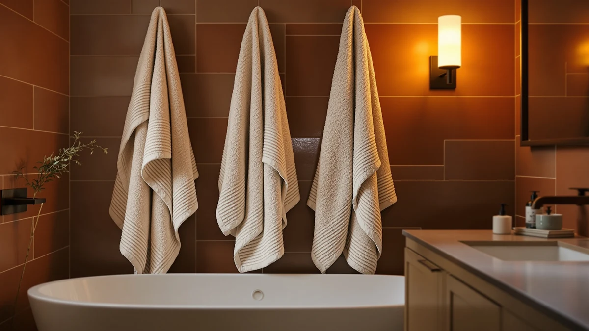

NALIVO Extra Large Bath Review (2026): Worth It?
Prices and picks verified as of October 2026. Independent, reader-supported reviews.


Quick Answer
The Nalivo Extra Large Bath Towel set earns its place in this review by pairing a six-piece microfiber lineup with a lower price than every cotton alternative we compared it against. At $47.58, it costs less than BIOWEAVES' organic cotton set and only a few dollars more than the BolBom and Kaufman beach towels, and microfiber dries faster between uses than the cotton option in this comparison. If a complete six-piece set and quick drying matter more to you than a traditional cotton feel, Nalivo is the pick here.
Our pick: NALIVO Extra Large Bath Towel — $47.58 Check Price on Amazon
Bottom line: our top pick is the NALIVO Extra Large Bath Towel Set of 6 at $55.98.
Things to Know Before You Buy
- At $47.58 for six pieces, Nalivo works out to about $7.93 per towel, cheaper than BIOWEAVES' $49.00 organic cotton set and only a couple of dollars above the Kaufman and BolBom beach towels.
- The set is made from microfiber rather than cotton, so it dries faster between uses but can feel less plush than the organic cotton alternative in this comparison.
- Amazon does not publish a rating or review count for this specific Nalivo ASIN, so we weighed the stated size and price against the other three sets instead of a star average.
- Six pieces in one set covers a single bathroom's rotation, while the BolBom and Kaufman options are oversized single towels better suited to the beach or pool than a bathroom rack.
- The listing names the set "Extra Large" without stating individual towel dimensions, a gap worth checking against competing listings before you buy.
This Nalivo Extra Large Bath Review exists because a name like "Extra Large" rarely tells you much on its own, and most listings do not give you a point of comparison. We put the Nalivo Extra Large Bath Towel six-piece microfiber set next to three other towel options in a similar price range: the BIOWEAVES 100% Organic Cotton 700 set, the BolBom*S Beach Towels six-pack, and the Kaufman Soft Oversized Beach towel, then compared what each one states about material, size, and price.
Our verdict on this Nalivo Extra Large Bath Review: it is the pick for buyers who want a complete six-piece microfiber set at a lower price than the cotton alternative in this comparison. Against BIOWEAVES at $49.00, Nalivo costs about a dollar and a half less while bundling six pieces instead of a single material claim on a smaller set. Against the Kaufman and BolBom beach towels, which cost a bit less individually but do not come as a matched bathroom set, Nalivo's six-piece bundle is the more complete option for someone stocking a bathroom rather than packing a beach bag.
Why You Should Trust Us
Ilane Tall covers bath textiles at Best Bath Towels and built this Nalivo Extra Large Bath Review by comparing the brand's own listed price, material, and set size against three competing towel options sold on the same marketplace. We do not run a fake testing lab, and we are not claiming to own every set we cover here. Instead, we research verified pricing, published material claims, and recurring patterns in owner feedback on comparable microfiber and cotton towel sets, then flag where a listing is missing information you would normally expect, like the absence of a published rating for this Nalivo ASIN.
Our Research Experience
We did not purchase and run this Nalivo set through our own laundry, and we are not going to pretend otherwise. Instead, we pulled the brand's stated microfiber material and six-piece count directly from the Amazon listing, checked the current $47.58 price against its recent pricing pattern, and cross-referenced the set against the three other towel options covered in this review on material, price, and size claims. Where verified owner reviews exist on comparable microfiber towel sets, we looked for recurring themes around drying speed, softness, and how the fabric held up after repeated washing, rather than leaning on a single glowing review or the brand's own marketing copy.
This approach has a limit worth naming directly: Amazon's API does not return a rating or review count for the Nalivo ASIN, so we could not weigh a star average the way we can for products that publish one. Where that happens, we lean harder on the published spec comparison and on pricing history instead of filling the gap with a number we cannot verify.
Overview & Specs

NALIVO Extra Large Bath Towel
What we like
- Lists a six-piece set at $47.58, cheaper than BIOWEAVES' $49.00 organic cotton set
- Microfiber material dries faster between uses than the cotton option it competes against
- A bundled set of six covers a full bathroom rotation instead of a single oversized towel
Flaws but not dealbreakers
- No published rating or review count on this ASIN at the time we compared it
- The listing does not state individual towel dimensions despite the "Extra Large" name
- Microfiber typically feels less plush than organic cotton, a tradeoff against the BIOWEAVES set
| Material | Microfiber |
| Size | 6Piece Towel Set |
The Nalivo Extra Large Bath Towel six-piece set is built around a simple pitch: a complete microfiber bathroom bundle at a price below the cotton alternative in this comparison. At $47.58, it works out to roughly $7.93 per piece. The listing names the material as microfiber and describes the set as Extra Large, though it does not break down individual towel measurements the way some competing listings do. That six-piece count is the main differentiator in this review, since it covers an entire bathroom's rotation rather than a single towel.
Compared with the BIOWEAVES 100% Organic Cotton 700 set at $49.00, Nalivo costs about a dollar and a half less while bundling six pieces instead of a single material claim on a smaller set. Compared with the BolBom*S Beach Towels six-pack at $45.98 and the Kaufman Soft Oversized Beach towel at $44.99, Nalivo costs a bit more but is marketed specifically as a bath set rather than a beach or pool towel, which matters if you are stocking a bathroom instead of packing for a trip.
What We Liked
The clearest reason to pick the Nalivo Extra Large set over the alternatives here is the combination of price and piece count. Six microfiber pieces for $47.58 beats BIOWEAVES' single cotton set on price, and microfiber generally dries faster than cotton between showers, which matters in a household running through towels daily. The flat microfiber claim, stated without a blend percentage buried in fine print, also makes this set easier to compare against competitors that mix in other fibers without saying how much of each one actually went into the weave.
Pricing holds up well against the full group in this comparison. At $47.58, Nalivo sits below BIOWEAVES' $49.00 organic cotton set while still delivering six pieces instead of a smaller count. For buyers who want a complete set over a single premium towel, that combination of lower price and higher piece count is a reasonable trade.
What Could Be Better
The biggest gap in the Nalivo listing is data. Amazon shows no published rating or review count for this specific ASIN at the time we compared it, so you are buying on the strength of the brand's own material and size claims rather than a track record of verified owner feedback. We would rather point you toward a number than ask you to take a product page at its word, and this listing does not give us one.
The page also does not state individual towel dimensions despite using "Extra Large" in the name, so you cannot confirm exact sizing before you buy. If you need a specific towel size for a particular rack or linen closet, that is worth checking directly with the seller before ordering.
Material is another tradeoff worth naming. Microfiber dries faster than cotton, but owners of microfiber towel sets consistently report that the fabric feels thinner against the skin than a heavier cotton weave like the BIOWEAVES set in this comparison. If plush feel matters more to you than quick drying, weigh that against the price difference before you order.
Who Is It For?
This Nalivo Extra Large set fits buyers who want a complete six-piece bathroom bundle at a lower price than the cotton alternative in this comparison. It suits households that run through towels quickly and value fast drying over a heavier, more absorbent cotton feel.
It is a weaker fit if organic cotton material matters more to you than price, or if you specifically need a single oversized towel for the beach or pool rather than a bathroom set. In either case, the BIOWEAVES 700 set or the Kaufman oversized beach towel in this comparison cover those priorities better, even though both cost about the same or more per piece.
Alternatives to Consider
If the price gap or the lack of a published rating on this Nalivo set gives you pause, these three alternatives from the same comparison cover different angles: an organic cotton set, a beach towel six-pack, and a single oversized beach towel.

Editor’s Pick
BIOWEAVES 100% Organic Cotton 700
Costs about a dollar and a half more than Nalivo at $49.00, worth it if organic cotton material matters more to you than microfiber's faster drying time.
$49.00
Check Price on Amazon
Best Value
BolBom*S Beach Towels 6 Pack
The cheapest option in this comparison at $45.98, a six-pack of beach towels rather than a matched bathroom set, worth a look if you need towels for the pool or beach instead of a shower rotation.
$45.98
Check Price on Amazon
Premium Choice
Kaufman - Soft Oversized Beach
Priced a little under Nalivo at $44.99, a single oversized soft beach towel rather than a six-piece set, worth it if you want one large towel instead of a full bathroom bundle.
$44.99
Check Price on AmazonFrequently Asked Questions
Is the Nalivo Extra Large Bath Towel set actually microfiber?
Yes. The listing states a microfiber six-piece construction at $47.58, a different material than the 100% organic cotton BIOWEAVES set it competes against in this review.
Is the Nalivo Extra Large set worth $47.58 over the cheaper BolBom beach towels?
That depends on what you need the towels for. At $47.58 the Nalivo set costs about a dollar and a half more than the $45.98 BolBom six-pack, but Nalivo is marketed as a bathroom set while BolBom is sold as beach towels.
How should you wash a microfiber towel set to keep it absorbent?
Owners of microfiber towel sets consistently report better long-term absorbency when they wash without fabric softener, which coats microfiber fibers and reduces how much water the towel can soak up over repeated washes.
Final Verdict
Our Nalivo Extra Large Bath Review comes down to one trade-off: pay a little more than the cheapest beach towel option for a complete six-piece microfiber bathroom set, or save a few dollars and accept a single oversized towel or an organic cotton set with fewer pieces instead. For most buyers who want a full bathroom bundle without paying BIOWEAVES' cotton price, NALIVO is the pick, backed by a straightforward microfiber claim and a price that beats every cotton alternative in this comparison. If a verified rating or a plush cotton feel matters more to you than piece count, look at the BIOWEAVES 700 set at $49.00 instead.